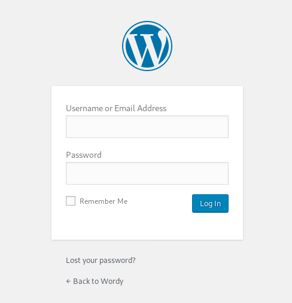
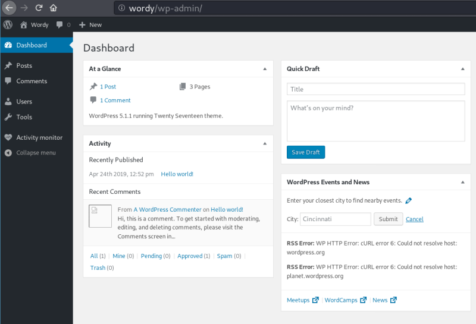

4.1 Log in WordPress
a) Login into WordPress.
In your browser go to http://wordy/wp-admin.

b) Introduce mark's credentials.
Username: mark
Password: helpdesk01

c) Click on “Activity Monitor”.
This is a plugin and you can look for an exploit. Index
Index